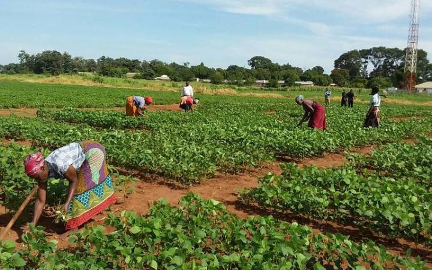

Production
Crop Production
Cultivation of staple and cash crops such as maize, rice, cocoa, and cassava using modern, sustainable techniques that aim to raise yields while protecting soil health for future seasons.